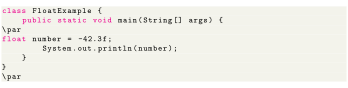

Next: char Up: 8 Primitive Data Types Previous: double Contents
The data type is a single-precision 32-bit floating-point. Learn more about single-precision and double-precision floating-point if you are interested. It should never be used for precise values such as currency. Default value is 0.0 (0.0f).

Notice that, we have used instead of in the above program. It's because is a double literal. To tell the compiler to treat as
rather than
 , you need to use f or F.
, you need to use f or F.